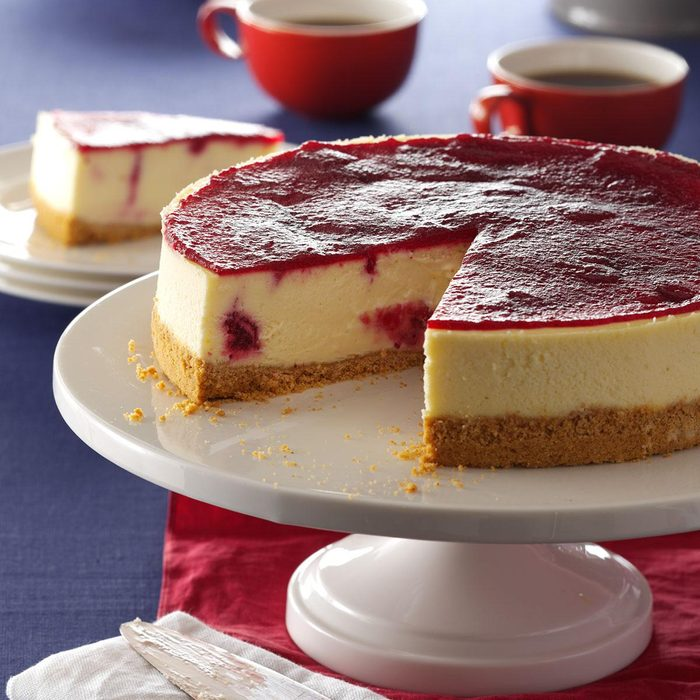

Cheesecake
Lets make a cheesecake!

Let us show you how to make cheesecake that's baked to perfection,
firm and fudgy with a tangy topping,
flavoured with vanilla and strawberries.
You will need -
For the base
- 125G unsalted butter
- 250g digetsive biscuits
For the cheesecake
- 3 eggs and 2 egg yolks
- 1 vanilla pod
- 900G cream cheese
- 200G caster sugar
- 300ml full-fat creme fraiche
For the sauce
- 200G strawberrys
- 25G icing sugar
Method
- Melt the butter in a medium saucepan over a gentle heat.
Brush a little of the melted butter around the base and sides of a
23cm/9in springform tin, then line the base with a circle of baking
parchment.
- Put the biscuits into a large sealable freezer bag,
squeeze out the air and seal the top. Use a rolling pin,
or a bottle, to crush the biscuits to fine crumbs.
- Stir the crumbs into the melted butter until completely combined.
Press the crumbs into the tin. Use the back of the spoon to compact the
crumbs as much as you can in an even layer. Put into the fridge to firm up
while you make the cheesecake, roughly 30 mins - 1 hour.
- Preheat the oven to 180C/350F/Gas 4.
- To separate the eggs, have three small bowls ready, preferably glass or
ceramic. Gently crack the shell against the side of a small bowl.
Slowly pull the shell apart as cleanly as possible along the crack,
tipping the yolk into one half of the shell.
Let the white drain away into the bowl below.
Drop the yolk into another small bowl.
Separate the next egg over a third bowl -
that way if you accidentally break the yolk,
it won’t contaminate the clean whites.
(The egg whites will keep for a week in the fridge,
and can be whipped up to lighten pancakes.)
- Slit the vanilla pod lengthwise, and scrape the seeds out with the blunt side
of your knife. Scrape the seeds from your knife (or spoon the vanilla paste)
into a large mixing bowl with the cream cheese.
Beat the cheese and vanilla together with a wooden spoon or a
hand-held mixer until smooth.
- Add the sugar, then beat again till smooth. Now add the eggs and yolks,
one at a time, followed by half of the crème fraîche.
- When the base is well chilled, wrap the outside of the tin in two sheets of
wide foil. Ensure that the foil covers the sides of the tin more than
halfway, then sit the wrapped tin in a deep roasting tin.
Spoon in the cheesecake filling and smooth the top.
- Boil a kettle full of water. Then place the roasting tin with the cheesecake
on the top shelf of the oven. Pour the hot water from the kettle into the
roasting tin around the cheesecake so that it comes halfway up the sides
and carefully slide the tin into the oven. Bake for 10 minutes at
180C/350F/Gas 4, then turn the oven down to 140C/275F/Gas 1 and cook
for another 40-50 minutes until the cheesecake is set, with a slight wobble
in the middle.
- Turn the oven off, and let the cheesecake cool in the oven,
with the door ajar. When cool, remove from the oven and chill
thoroughly. Cooling the cheesecake slowly will help to prevent the
top from cracking.
- For strawberry sauce, put half of the strawberries into a food processor
or blender, add the icing sugar then pulse until smooth.
Slice the remaining strawberries and set aside.
- About half an hour before you want to eat the cheesecake,
remove it from the fridge. Sweep a palette knife between the cake
and the side of the tin, then carefully unclip the springform.
Transfer the cheesecake to a serving plate.
Spread the remaining crème fraîche over the surface of the cheesecake
- this will cover any cracks that might have appeared.
Decorate the top with the sliced strawberries -
then cut into wedges and serve with the strawberry sauce poured over.